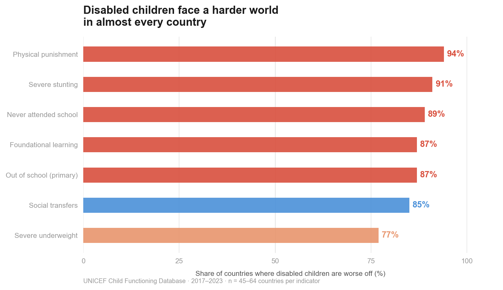
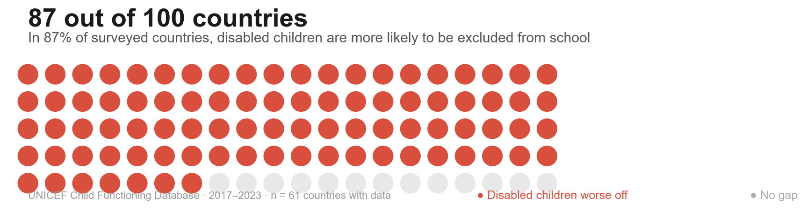

Close ✕
In almost every country we have data for, a child born with a disability faces worse outcomes in every domain we can measure — education, nutrition, physical safety, and social support. This is not a story about one country or one policy failure. It is a pattern that appears in 87–94% of surveyed countries.
Whether we look at nutrition, schooling, physical safety, or social support — in the large majority of countries with available data, children with disabilities are consistently worse off than children without. The gap is not a regional pattern. It appears across every part of the world represented in this dataset.
The chart below shows, for each indicator, what share of countries have a gap that disadvantages disabled children. Physical punishment leads at 94% — meaning in 60 out of 64 countries with data, a disabled child is more likely to be physically punished than a non-disabled child.

Each bar shows one indicator. The percentage is the share of surveyed countries where disabled children face a higher burden. n ranges from 45 to 64 countries per indicator depending on data availability.

Each dot represents one country. Red = disabled children are more likely to be out of school at primary level. Grey = no meaningful gap. 87 out of 100 countries show a gap.
The world map below shows the school exclusion gap — the difference in out-of-school rates at primary level between disabled and non-disabled children — for every country with available data. Hover over any country to see the exact figures.
The darkest red countries have the largest gaps. In Laos, disabled children are more than three times as likely to be out of school (41.6% vs 13.2%). In Kosovo, the gap is nearly 31 percentage points among Roma communities. Grey countries have no data available in the UNICEF database.
Darker red = larger gap between disabled and non-disabled children in out-of-school rates at primary level. Grey = no data. Hover for exact values. Source: UNICEF Child Functioning Database, 2017–2023.
The education gap does not simply affect childhood. Missing primary school shapes secondary attendance, literacy, and economic opportunity across an entire life. Disabled children who are excluded from school at age 6 face compounded disadvantage at every subsequent stage.
Social protection systems do show awareness of this. In 85% of countries, disabled children receive more social transfers than non-disabled children. The system acknowledges the need — but the transfers alone are not sufficient to close the gaps in education, nutrition, and safety.
The guided narrative shows the global pattern. Now explore the data yourself. Use the slider below to select any country and see its disability gap across all available indicators — physical punishment, school exclusion, stunting, and social transfers.
A positive gap means disabled children are worse off. A negative gap means disabled children are actually better off on that indicator. The zero line is the point of equality.
Use the slider to move between countries. Gap = value for disabled children minus value for non-disabled children, in percentage points. Source: UNICEF Child Functioning Database, 2017–2023.
Dataset
The UNICEF Child Functioning Database (July 2025 release) covers 207 countries and territories. Data comes from MICS (Multiple Indicator Cluster Surveys) conducted 2017–2023. Each indicator is reported separately for children with and without functional difficulties, allowing direct gap calculation.
Narrative structure
We use the Martini Glass structure (Segel & Heer, 2010): a guided author-driven narrative in §1–2, a semi-open geographic detail layer in §2, and a fully reader-driven exploration in §3. This ensures the key finding (the gap is universal) is communicated before the reader is given freedom to explore.
Gap calculation
For each indicator, the gap = value for disabled children minus value for non-disabled children. A positive gap means disabled children are worse off. For foundational learning (where higher = better), the gap is reversed. For social transfers, a positive gap means disabled children receive more support.
Limitations
Data covers 45–64 countries depending on the indicator — predominantly low- and middle-income countries. We cannot make global claims. This is a cross-sectional snapshot; we cannot track whether gaps are widening or narrowing. No causal analysis is possible from this data alone.